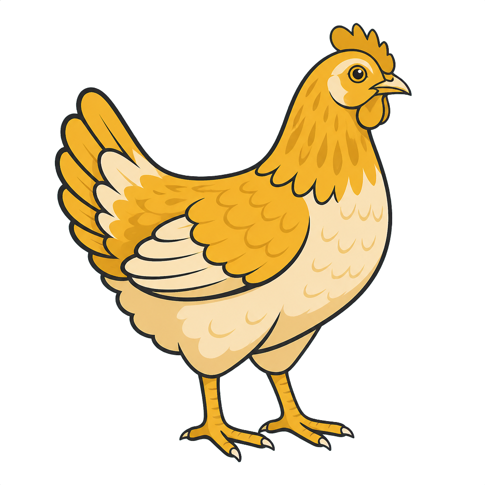
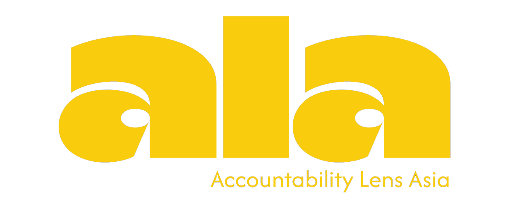
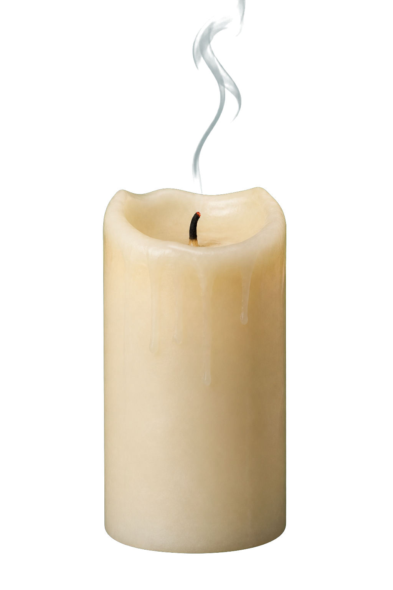
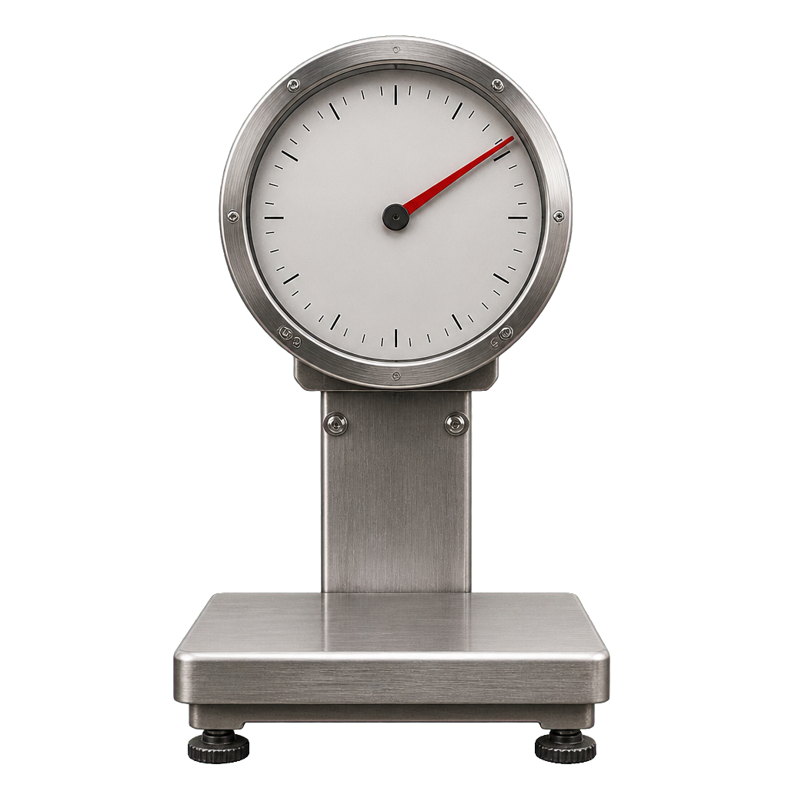
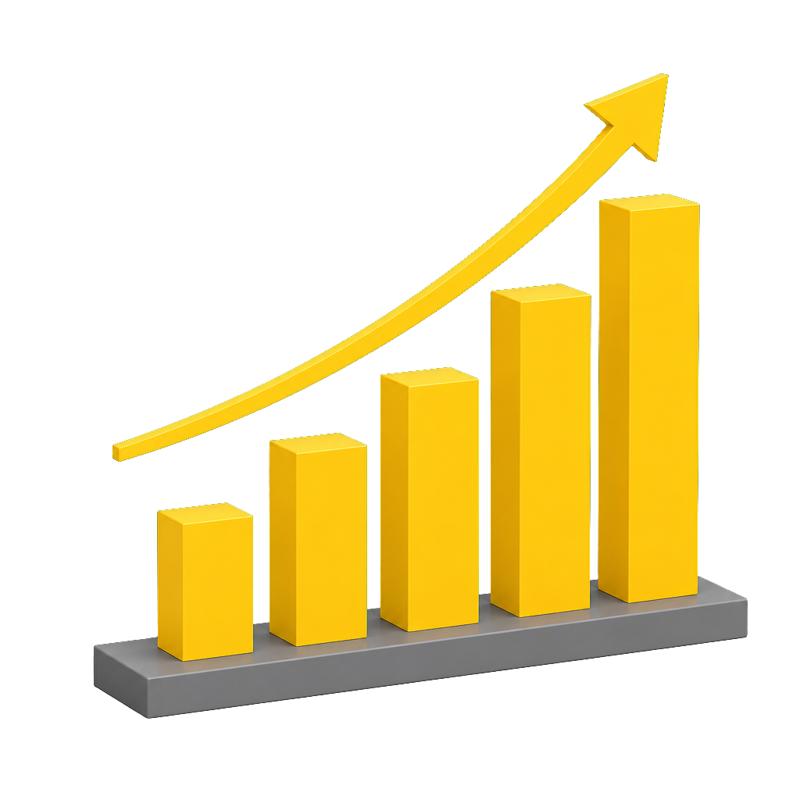

01 — Vietnam, 2024
chickens were slaughtered in Vietnam in 2024 — about 22 every second.


Source: FAO / FAOSTAT, 2024
02 — A six-week life
is all most meat chickens get. Killed at six weeks old — though a chicken can live up to 10 years.

Source: The Humane League · industrial-broiler standard
03 — Built to grow
The breeds raised on industrial farms grow 4 times faster than those of 1957 — bred for weight their hearts and legs can't keep up with.

Source: Zuidhof et al., Poultry Science, 2014
04 — And rising
And it keeps climbing — from 389 million birds a year in 2015 to 687 million in 2024. Nothing about their lives has changed.
→ Follow @ALA to hold the industry to account
Source: FAO / FAOSTAT, 2015–2024